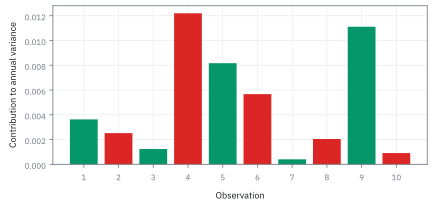
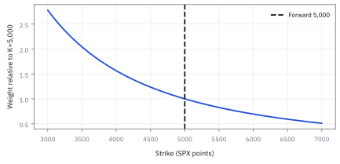
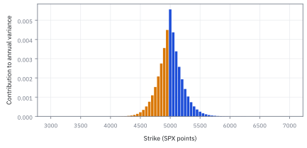
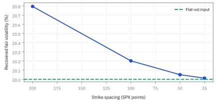
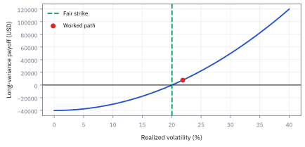

14.8 Variance Swaps and Log-Contract Replication
variance swap จ่ายตาม variance ที่เกิดจริง ราคายุติธรรมของมันอ่านได้จาก option ทุก strike ที่ถ่วงด้วย $1/K^2$ โดยไม่ต้องเชื่อแบบจำลองใด ตราบที่ราคาไม่กระโดด
โต๊ะขาย variance swap บน SPX อายุ 30 วันปฏิทิน (21 วันทำการ) notional \$1,000,000 ต่อ variance 1.00 ที่ strike 0.040203 หรือความผันผวน 20.05% ซึ่งคิดจาก option 81 strike ผ่านไป 10 วันทำการ ผลตอบแทนรายวันคือ +1.2%, −1.0%, +0.7%, −2.2%, +1.8%, −1.5%, +0.4%, −0.9%, +2.1%, −0.6% ความผันผวนที่เกิดแล้วคือ 21.88% เทรดเดอร์รายงานว่า “เราเสีย \$7,677 แล้ว” ตัวเลขนี้ถูกไหม?
ลองตอบก่อนเปิดเฉลย
ยังไม่ถูก \$7,677 คิดเหมือนสัญญาจบที่ 10 วัน แต่สัญญาวัด 21 ผลตอบแทน 10 วันที่ผ่านไปเป็นแค่ 10/21 ของ variance ทั้งสัญญา ถ้า 11 วันที่เหลือแกว่งเท่าระดับ strike variance ทั้งสัญญาจะเป็น 0.043859 และโต๊ะเสีย \$3,656 จะเสียถึง \$7,677 ก็ต่อเมื่อ 11 วันที่เหลือแกว่ง 21.88% เท่า 10 วันแรก และสังเกตว่าผลตอบแทนทั้งสิบรวมกันได้ศูนย์พอดี ดัชนีกลับมาที่เดิม แต่ variance ไม่ได้เป็นศูนย์
ภาพรวมก่อนลงสูตร
หน้าของโครงสร้างสำหรับเทรดความผันผวนแสดงว่า option ที่ hedge delta แล้วได้เสียวันละ $\tfrac12\Gamma S^2(R^2-\sigma^2\delta t)$ ผลจึงถ่วงด้วย gamma ซึ่งสูงเฉพาะตอนหุ้นอยู่ใกล้ strike ถ้าหุ้นหนีไปไกล straddle เลิกได้ประโยชน์จากการแกว่ง ส่วนแบบจำลอง Heston สร้าง variance เฉลี่ยจากสมการที่ต้องเชื่อ หน้านี้กลับด้าน: สัญญาที่จ่ายตาม variance ที่เกิดจริงตรง ๆ แล้วหาราคายุติธรรมของมันจากราคา option ในตลาดวันนี้ โดยไม่สมมติแบบจำลองความผันผวนใดเลย
กุญแจคือสัญญาสมมติที่จ่าย $-\log(S_T/F)$ เรียกว่า log contract มันมี gamma แบบที่ $\tfrac12S^2\Gamma$ คงที่ทุกระดับราคา จึงได้เงินตาม $R^2$ ไม่ว่าหุ้นจะไปอยู่ไหน และมันประกอบได้จาก put นอกเงินทุก strike ใต้ forward กับ call นอกเงินทุก strike เหนือ forward ถ่วงด้วย $1/K^2$ รูปด้านล่างคือภาพนี้: เส้นโค้งคือส่วนที่ log contract ต้องจ่าย เส้นหักคือผลรวมของ option 17 ตัว ซึ่งทับเส้นโค้งเกือบสนิท
ลำดับคือ คิด realized variance ด้วยมือ นิยามสัญญา ใช้ Itô แยก variance ออกจาก log ของราคา แสดงว่า log contract ประกอบได้จาก option ทุก strike ดูว่าทำไม dollar gamma ของมันคงที่ ตรวจสูตรกับกรณีที่รู้คำตอบ ใช้กับกริด 81 strike อธิบายว่าทำไมกริดให้ 20.05% ไม่ใช่ 20% ชำระเงินและ mark-to-market เชื่อม 30 วันแบบ VIX แล้วจบที่จุดที่การทำซ้ำพัง: ราคากระโดด ตลาดในหน้านี้เป็นตัวอย่างสมมติ: forward ของ SPX 5,000 จุด ดอกเบี้ย 4% ต่อปี อายุ $T=30/365$ ปี ราคา option ทุกตัวสร้างจากสูตร Black–76 (สูตร Black–Scholes ที่เขียนด้วย forward) ที่ความผันผวนแบน 20% strike 3,000 ถึง 7,000 ทุก 50 จุด
รูป — log contract ประกอบจาก put และ call นอกเงินที่ถ่วงด้วย 1/K²
ศัพท์ที่ใช้ในหัวข้อนี้
- Variance swap
- สัญญาที่วันหมดอายุจ่าย notional คูณ (realized variance ลบ strike) ใช้ซื้อหรือขายความผันผวนตรง ๆ โดยไม่ต้อง hedge delta เองและไม่ขึ้นกับว่าหุ้นจบที่ไหน
- Realized variance
- ผลรวมของ log return รายวันยกกำลังสอง ปรับเป็นต่อปีด้วย 252 วันทำการต่อปี (จำนวนวันที่ตลาดหุ้นสหรัฐฯ เปิดโดยประมาณ) เป็นตัวเลขที่ใช้ชำระเงิน ยกกำลังสองเพื่อให้วันขึ้นและวันลงนับเท่ากันตามขนาด
- Variance notional และ vega notional
- variance notional คือเงินต่อ variance 1.00 ต่อปี vega notional คือเงินโดยประมาณต่อความผันผวน 1 จุดรอบ strike ตลาดคุยขนาดสัญญาด้วยตัวหลัง แต่ชำระด้วยตัวแรก
- Log contract
- สัญญาสมมติที่จ่าย $-\log(S_T/F)$ ไม่มีขายจริง แต่ราคาของมันคือ variance ที่คาดไว้พอดี และประกอบได้จาก option ทุก strike
- Static replication และ option strip
- การซื้อ option หลาย strike ในวันแรกแล้วถือไว้เฉย ๆ จนหมดอายุ strip คือแถว option ของวันหมดอายุเดียวกันที่ถ่วงน้ำหนักด้วย $1/K^2$ ส่วนที่ยังต้องปรับทุกวันมีแค่ขาหุ้น
- VIX และ constant maturity
- VIX คือรากของ fair variance 30 วันของ S&P 500 ที่ Cboe คำนวณจากผลรวมแบบในหน้านี้ แล้วเชื่อมสองวันหมดอายุที่คร่อม 30 วันบน total variance ให้ได้อายุคงที่
- Replication error จาก jump
- ส่วนต่างระหว่างที่สัญญาจ่ายกับที่พอร์ตทำซ้ำให้ ในวันที่ราคากระโดด สูตรในหน้านี้สมมติเส้นทางต่อเนื่อง วันกระโดดจึงเหลือส่วนนี้เสมอ
สัญลักษณ์และหน่วย
| สัญลักษณ์ | ความหมาย | หน่วย |
|---|---|---|
| $r_i=\log(S_{t_i}/S_{t_{i-1}})$ | log return วันที่ $i$ | ไม่มีหน่วย |
| $n,\ A$ | จำนวนผลตอบแทนในสัญญา (21) และจำนวนวันทำการต่อปี (252) | ไม่มีหน่วย |
| ${\rm RV}$ | realized variance ต่อปี | ต่อปี |
| $K_{\rm var},\ K_{\rm vol}=\sqrt{K_{\rm var}}$ | strike ของ variance และรากที่รายงานเป็นความผันผวน | ต่อปี, ต่อรากที่สองของปี |
| $N_v$ | variance notional | ดอลลาร์ต่อ variance 1.00 |
| $F,\ D=e^{-rT}$ | forward และ discount factor | จุด SPX, ไม่มีหน่วย |
| $\sigma_t$ | ความผันผวน ณ ขณะนั้น (เปลี่ยนตามเวลาได้) | ต่อรากที่สองของปี |
| $P(K),\ C(K),\ Q(K)$ | put, call และราคา OTM ที่ใช้ (put ใต้ $F$, call เหนือ $F$) | จุด SPX |
| $h=\Delta K$ | ระยะห่างของ strike บนกริด | จุด SPX |
| $w=\sigma^2T$ | total variance ของอายุ $T$ | ไม่มีหน่วย |
ขั้นที่ 1 — ลองด้วยมือ: variance ของ 10 วัน
โจทย์ให้อะไรมาบ้าง: log return 10 วันของโจทย์เปิดเรื่อง (หน่วยเปอร์เซ็นต์ จึงคูณ 0.01 ก่อน ยกกำลังสองแล้วเท่ากับคูณ $10^{-4}$) ยกกำลังสองทีละวันก่อน แล้วค่อยบวก และปรับเป็นต่อปีด้วย 252 วันทำการหารด้วย 10 วัน
คำตอบ: variance ต่อปีของ 10 วันนี้คือ 0.04788 หรือความผันผวน 21.88% ผลตอบแทนทั้งสิบรวมกันได้ศูนย์พอดี ดัชนีจบที่เดิม แต่ variance ไม่ใช่ศูนย์ เพราะยกกำลังสองก่อนบวก วันขึ้นกับวันลงจึงไม่หักล้างกัน สัญญาจริงไม่ลบค่าเฉลี่ยออกก่อนยกกำลังสอง เพราะค่าเฉลี่ยรายวันเล็กมากเมื่อเทียบกับขนาดการแกว่ง
ตรวจเองใน 10 วินาที: วัน −2.2% ให้ $4.84\times10^{-4}$ มากที่สุด ถ้ามันเป็น +2.2% ผลก็เท่าเดิม สัญญานี้สนใจขนาดการขยับ ไม่สนใจทิศ (รูปข้างล่าง)
รูป — แต่ละวันเพิ่ม variance ตามขนาด ไม่ใช่ตามทิศ

ขั้นที่ 2 — สัญญาจ่ายอะไร และ variance ของช่วงต่อกันบวกกันได้
ก่อนพูดเรื่อง hedge ต้องรู้ว่าสัญญาจ่ายตามอะไร สองบรรทัดแรกเป็นนิยามที่คู่สัญญาตกลงกัน: 30 วันปฏิทินมีวันทำการราว $30\times252/365=20.7$ วัน สัญญานี้จึงวัด $n=21$ ผลตอบแทน (สมมติ) ส่วนบรรทัดที่เหลือแยก variance ของทั้งสัญญาเป็นส่วนที่เกิดแล้วกับส่วนที่ยังไม่เกิด
บรรทัดที่สามได้จากการแยกผลรวม 21 ตัวเป็น 10 ตัวแรกกับ 11 ตัวหลัง แล้วเขียนแต่ละก้อนเป็น variance ต่อปีของช่วงตัวเอง: $\frac{252}{21}\sum_1^{10}=\frac{10}{21}\cdot\frac{252}{10}\sum_1^{10}$ variance ของช่วงต่อกันบวกกันได้ตามน้ำหนักเวลา เพราะก้อนสุ่มของช่วงไม่ทับกันอิสระกัน (สามสมบัติของ Brownian motion) ส่วนความผันผวน (ราก) บวกแบบนี้ไม่ได้
บรรทัดสุดท้ายแปลงขนาดสัญญา: ถ้าความผันผวนที่เกิดจริงขยับจาก $K_{\rm vol}$ ไป 1 จุด (0.01) variance ขยับราว $2K_{\rm vol}(0.01)$ ตามอนุพันธ์ของ $\sigma^2$ ที่ strike 20.05% จึงได้ราว \$4,010 ต่อจุด ตัวอย่าง mark-to-market ด้านล่างจะแสดงว่าค่านี้ใช้ได้แค่ใกล้ strike
ขั้นที่ 3 — Itô แยก variance ออกจาก log ของราคา
ถ้าจะตั้งราคาสัญญานี้ ต้องหาของที่ซื้อขายได้ซึ่งจ่ายตาม $\int\sigma_t^2dt$ ใช้ Itô's lemma กับ $\log S$ โดยยอมให้ $\sigma_t$ เปลี่ยนตามเวลาและสุ่มได้ (เช่นใน Heston) สมมติเดียวคือราคาเดินต่อเนื่อง
บรรทัดที่สองคือ Itô กับ $f(S)=\log S$ ซึ่ง $f'=1/S$ และ $f''=-1/S^2$ พจน์ครึ่งหนึ่งของ $(dS)^2$ ติดลบเพราะ $\log$ โค้งลง บรรทัดที่สามคือกฎคูณ $(dW)^2=dt$ ย้ายข้างแล้วได้บรรทัดสุดท้าย: variance ของแต่ละช่วงสั้น ๆ เท่ากับผลตอบแทนของการถือหุ้นมูลค่าคงที่สองหน่วย ลบสองเท่าของการขยับของ log
ไม่ได้สมมติว่า $\sigma$ คงที่เลย ทั้งสองอย่างทางขวาเป็นของที่ซื้อขายได้: ก้อนแรกคือขาหุ้นที่ปรับทุกวัน ก้อนที่สองคือสัญญาที่จ่ายตาม $\log S_T$
ขั้นที่ 4 — variance ที่คาดไว้คือราคาของ log contract
รวมบรรทัดสุดท้ายที่เพิ่งได้ตลอดอายุแล้วเอาค่าคาดหมายภายใต้ risk-neutral measure ขาหุ้นเหลือแค่ drift เพราะค่าคาดหมายของ $\int\sigma\,dW$ เป็นศูนย์ (Itô integral) ส่วน log แยกเป็นส่วนที่เทียบกับ forward $F=S_0e^{(r-q)T}$ บวกส่วนที่รู้แน่นอน
บรรทัดสุดท้ายได้จากการแทนสองบรรทัดกลางลงในบรรทัดแรก พจน์ $2(r-q)T$ หักกันพอดี ผลคือคำถามที่ตอบไม่ได้ “อนาคตจะผันผวนแค่ไหน” ถูกแทนด้วยคำถามที่ตลาดตอบได้ “สัญญาที่จ่าย $-2\log(S_T/F)$ ราคาเท่าไร” fair strike จึงเป็น $K_{\rm var}=\frac1T\mathbb E^{\mathbb Q}[\int_0^T\sigma_t^2dt]$ ซึ่งเป็นค่าภายใต้ risk-neutral measure ไม่ใช่คำพยากรณ์
ขั้นที่ 5 — payoff โค้งใดก็ประกอบได้จาก option ทุก strike (Carr–Madan)
log contract ไม่มีขาย ขั้นนี้แสดงว่า payoff $g(S_T)$ ที่หาอนุพันธ์ได้สองครั้งใดก็ตาม เขียนได้เป็นเส้นสัมผัสที่ $F$ บวก put และ call ทุก strike ถ่วงด้วย $g''(K)$ ใช้ทฤษฎีบทมูลฐานของแคลคูลัสแล้ว integration by parts ทีละฝั่ง เริ่มจาก $S_T\ge F$
บรรทัดที่สองเลือกตัวที่อินทิเกรตแล้วของ $dK$ เป็น $-(S_T-K)$ ซึ่งเป็นศูนย์ที่ขอบบน ขอบล่างจึงเหลือ $g'(F)(S_T-F)$ คือเส้นสัมผัส อินทิกรัลที่เหลือมี $(S_T-K)$ ซึ่งเป็น payoff ของ call ที่ $K$ ต่ำกว่า $S_T$ และเป็นศูนย์เมื่อ $K$ สูงกว่า จึงขยายขอบบนเป็น $\infty$ ด้วย $(\cdot)^+$ ได้
ฝั่ง $S_T\lt F$ ทำแบบเดียวกันโดยใช้ $K-S_T$ แทน ได้ put แทน call บรรทัดสุดท้ายรวมสองกรณี ใช้ได้ทุก $S_T$ เพราะในแต่ละกรณีอินทิกรัลอีกตัวเป็นศูนย์ น้ำหนักของ strike ใดคือความโค้ง $g''$ ที่ strike นั้น นี่คือเหตุผลเดียวกับที่ราคา butterfly บอก density ในผืนความผันผวน: option ที่ strike $K$ คือก้อนอิฐที่ใส่ความโค้งให้ payoff ตรงจุด $K$ พอดี
ขั้นที่ 6 — ใส่ log contract แล้วได้สูตร fair strike
ใช้สูตรประกอบที่เพิ่งได้กับ $g(S)=-\log(S/F)$ ซึ่ง $g(F)=0$, $g'(F)=-1/F$ และ $g''(K)=1/K^2$ แล้วเอาค่าคาดหมาย ขาเส้นตรงหายเพราะ $\mathbb E^{\mathbb Q}[S_T]=F$ ส่วนค่าคาดหมายของ payoff option คือราคาวันนี้คูณ $e^{rT}$
น้ำหนัก $1/K^2$ ไม่ใช่ธรรมเนียม มันคือความโค้งของ $-\log$ พอดี put strike ต่ำจึงได้น้ำหนักต่อราคามากกว่า call strike สูง (รูปน้ำหนักข้างล่าง) สูตรใช้แค่ราคา OTM ของวันหมดอายุเดียว ไม่มี $\sigma$ ของแบบจำลองใดอยู่ในนั้น จึงใช้ได้กับ smile แบบไหนก็ได้ ตราบที่ราคาเดินต่อเนื่องและมี option ครบทุก strike
ถ้าตลาดมี skew put strike ต่ำซึ่งแพงอยู่แล้วยังได้น้ำหนักมาก fair variance จึงสูงกว่า variance ที่ ATM ตัวอย่างจากแบบจำลอง Heston ในหน้าก่อน: fair variance 1 ปีคือ $\mathbb E[\bar v_1]=0.061617$ (24.82%) ขณะที่ implied volatility ATM คือ 24.15% และฝั่ง put ให้ 63% ของผลรวม เทียบกับ 50.8% ในตลาดแบนของหน้านี้
รูป — น้ำหนัก 1/K² เทียบกับที่ forward

ขั้นที่ 7 — ทำไม strip นี้ได้ variance ไม่ว่าหุ้นจะไปไหน: dollar gamma คงที่
option ตัวเดียวที่ hedge delta แล้วได้วันละ $\tfrac12\Gamma S^2(R^2-\sigma^2\delta t)$ ถ้า $\tfrac12\Gamma S^2$ (dollar gamma) เปลี่ยนตามราคา ผลก็ขึ้นกับว่าหุ้นแกว่งตอนอยู่ตรงไหน log contract มีความโค้งที่ทำให้ตัวนี้คงที่ หาอนุพันธ์ของ payoff $\frac2T\big(-\log S\big)$ สองครั้ง
$S^2$ ในตัวเศษหักกับ $1/S^2$ ของความโค้งพอดี dollar gamma จึงเป็น $1/T$ ทุกระดับราคา บรรทัดสุดท้ายคือสูตรต่อช่วงของ option ที่ hedge แล้ว ใส่ dollar gamma คงที่: ทุกวันได้ $R^2$ จริงลบ $\sigma^2\delta t$ ที่จ่ายไว้ รวมทั้งอายุได้ realized variance ลบ strike ตรงกับ payoff ของ variance swap
ข้อนี้คือความต่างจาก straddle ในตัวอย่างขาย call ที่ 30% บนเส้นทาง 50 ช่วงของหน้าโครงสร้างความผันผวน: การกระโดดครั้งเดียวตอนหุ้นอยู่ใกล้ strike กินกำไรไปเกือบสามในสิบ เพราะ gamma ตรงนั้นสูง กับ strip $1/K^2$ วันนั้นจะนับเท่ากับวันอื่นที่ขนาดการขยับเท่ากัน
รูป — dollar gamma ของ strip แบน ของ straddle เป็นยอดแหลม
ขั้นที่ 8 — ตรวจสูตรกับกรณีที่รู้คำตอบ
โจทย์ให้อะไรมาบ้าง: ในตลาดสมมติ ความผันผวนแบน 20% ทุก strike คำตอบที่ถูกจึงต้องเป็น $0.2^2=0.04$ พอดี คิดอินทิกรัลของสูตร fair strike ด้วย Simpson บนตัวแปร $y=\log(K/F)$ จาก −1.5 ถึง 1.5 (แยกที่ $y=0$ ซึ่งเป็นมุมหักของ $Q$) ตัวคูณคือ $2e^{rT}/T$ โดย $rT=0.04(30/365)=0.0032877$
คำตอบ: สูตรคืน 0.04 ทุกหลักที่คำนวณ ฝั่ง put ให้ 50.8% ของผลรวม ฝั่ง call 49.2% และการตัด strike ไว้ที่ 3,000 ถึง 7,000 ทำให้เสียไปแค่ $3.8\times10^{-12}$ เพราะที่อายุ 30 วัน ปีกที่ไกลขนาดนั้นแทบไม่มีราคา
ตรวจเองใน 10 วินาที: 30 วันที่ 20% มี SD ของ log ราว $0.2\sqrt{0.0822}=0.057$ strike 3,000 อยู่ที่ $\log(0.6)=-0.51$ ห่างราว 9 SD ราคา put ที่นั่นจึงเป็นศูนย์ในทางปฏิบัติ
ขั้นที่ 9 — กริดจริง 81 strike
โจทย์ให้อะไรมาบ้าง: ตลาดมี strike แค่ทุก 50 จุด จึงแทนอินทิกรัลด้วยผลรวม (แบบที่ Cboe ใช้กับ VIX) ใช้ put ใต้ $F$ call เหนือ $F$ และค่าเฉลี่ยของทั้งสองที่ $K_0=F=5{,}000$ แต่ละ strike คูณความกว้าง $\Delta K=50$ พจน์ปรับ $-\frac1T(F/K_0-1)^2$ เป็นศูนย์เพราะ $K_0=F$ ตารางข้างล่างแสดง 9 จาก 81 แถว
| $K$ | ขาที่ใช้ | $Q(K)$ (จุด) | $10^4\cdot50\,Q/K^2$ |
|---|---|---|---|
| 4,000 | put | 0.002934 | 0.000092 |
| 4,500 | put | 3.518020 | 0.086865 |
| 4,800 | put | 39.190377 | 0.850486 |
| 4,900 | put | 69.937135 | 1.456417 |
| 5,000 | ค่าเฉลี่ย call กับ put | 113.982179 | 2.279644 |
| 5,100 | call | 72.082248 | 1.385664 |
| 5,200 | call | 42.764619 | 0.790766 |
| 5,500 | call | 6.003740 | 0.099235 |
| 6,000 | call | 0.062475 | 0.000868 |
คำตอบ: fair strike ของกริดคือ 0.040203 หรือ 20.05% นี่คือ strike ในโจทย์เปิดเรื่อง สูงกว่าคำตอบที่ถูก 0.04 อยู่ 0.000203 ทั้งที่การตัดปีกเสียไปแค่ $3.8\times10^{-12}$ ส่วนเกินทั้งก้อนจึงมาจากระยะห่างของ strike ขั้นถัดไปหาขนาดของมันด้วยมือ
ตรวจเองใน 10 วินาที: แถว 5,000 ให้ส่วนมากที่สุด $2.28\times10^{-4}$ เพราะ option ใกล้ forward แพงที่สุด ส่วนแถว 4,000 แม้น้ำหนัก $1/K^2$ สูงกว่า แต่ราคา 0.0029 เล็กจนแทบไม่เหลืออะไร (รูปข้างล่าง)
รูป — strike ใกล้ forward สร้างผลรวมส่วนใหญ่

ขั้นที่ 10 — ทำไมกริดให้ 20.05% ไม่ใช่ 20%: มุมหักที่ forward
ผลรวมบนกริดคือกฎสี่เหลี่ยมคางหมู (trapezoid) บน $f(K)=Q(K)/K^2$ ความคลาดเคลื่อน $E_h$ (ผลรวมลบอินทิกรัล) ของกฎนี้บนช่วงที่ฟังก์ชันเรียบคือ $\frac{h^2}{12}[f'(b)-f'(a)]$ (ผลมาตรฐานของการอินทิเกรตเชิงตัวเลข รับมาใช้) $f$ เรียบทั้งสองฝั่งของ $F$ แต่มีมุมหักที่ $F$ เพราะเปลี่ยนจาก put เป็น call ส่วนปลาย 3,000 และ 7,000 มี $f'$ เกือบศูนย์ ความคลาดเคลื่อนจึงมาจากมุมหักอย่างเดียว
บรรทัดที่สองใช้อนุพันธ์ของราคาตาม strike: $P_K=D\,\mathbb Q(S_T\lt K)$ และ $C_K=-D\,\mathbb Q(S_T\gt K)$ (หาอนุพันธ์ของ payoff แล้วเอาค่าเฉลี่ยที่คิดลด) ลบกันได้ $D$ เพราะสองโอกาสรวมเป็นหนึ่ง พจน์ $-2Q/K^3$ ในอนุพันธ์ของ $f$ เท่ากันทั้งสองฝั่งจึงหักกันหมด บรรทัดที่สาม $e^{rT}D=1$
สูตรทำนาย 0.00020278 ส่วนต่างจริงคือ 0.00020277 ความคลาดเคลื่อนเป็นสัดส่วนกับ $h^2$: ระยะ 200, 100, 50 และ 25 จุดให้ 20.79%, 20.20%, 20.05% และ 20.01% ลดลงสี่เท่าทุกครั้งที่ระยะลดครึ่ง บนกริดจริงควรลบ $h^2/(6TF^2)$ ออก หรือบอกว่ามันรวมอยู่
รูป — ความผันผวนที่กริดคืนเข้าหา 20% เมื่อ strike ถี่ขึ้น

ขั้นที่ 11 — ชำระเงิน และ mark-to-market กลางสัญญา
โจทย์ให้อะไรมาบ้าง: strike 0.040203 จากกริด 81 strike notional \$1,000,000 ผ่านไป 10 จาก 21 วันด้วย ${\rm RV}_{10}=0.04788$ ถ้า 11 วันที่เหลือแกว่งเท่าระดับ strike (ค่าที่ตลาดคาดไว้เมื่อทำสัญญา) ใช้การแยก variance ตามน้ำหนักเวลา และเทียบกับการประมาณด้วย vega notional
คำตอบ: ผู้ซื้อ variance คาดว่าจะได้ \$3,656 ณ วันหมดอายุ โต๊ะที่ขายจึงเสียราว \$3,656 ไม่ใช่ \$7,677.23 ซึ่งเป็นตัวเลขของกรณีที่ทั้ง 21 วันแกว่ง 21.88% ส่วนสองบรรทัดล่างแยก \$7,677.23 เป็นส่วนเส้นตรงของ vega notional \$7,342 (1.83 จุดคูณ \$4,010) กับส่วนโค้ง \$335 เพราะ payoff เป็นเส้นตรงใน variance แต่โค้งในความผันผวน (รูปข้างล่าง)
ตรวจเองใน 10 วินาที: $3{,}656=\tfrac{10}{21}\times7{,}677.23$ เพราะส่วนที่ยังไม่เกิดคาดไว้ที่ strike พอดี จึงไม่ให้กำไรหรือขาดทุน
รูป — payoff เป็นเส้นตรงใน variance แต่โค้งในความผันผวน

ขั้นที่ 12 — 30 วันคงที่แบบ VIX: เชื่อมบน total variance
ตลาดมีวันหมดอายุจริงที่ 23 และ 37 วัน (สมมติ ความผันผวน 22% และ 19%) แต่ดัชนีต้องการ 30 วันคงที่ variance ของช่วงต่อกันบวกกันได้ตามเวลา จึงเชื่อมบน total variance $w=\sigma^2T$ แล้วค่อยแปลงกลับ แบบเดียวกับการเชื่อมอายุบนผืนความผันผวน
30 วันอยู่กึ่งกลางระหว่าง 23 กับ 37 น้ำหนักจึงเป็น 0.5 ถ้าเฉลี่ยความผันผวนตรง ๆ จะได้ 20.5% สูงเกินไป 0.30 จุด เพราะอายุสั้นที่ความผันผวนสูงกินเวลาน้อยกว่า VIX คือ $100\sigma_{30}$ ที่คิด $K_{\rm var}$ ของแต่ละวันหมดอายุด้วยผลรวมแบบกริด 81 strike แล้วเชื่อมแบบนี้ มันเป็นดัชนี ไม่ใช่ราคาของ variance swap ที่ซื้อขายได้ทันที
ขั้นที่ 13 — ราคากระโดด: ส่วนที่การทำซ้ำจ่ายไม่ครบ
การแยก variance ออกจาก log ใช้ Itô ซึ่งต้องการเส้นทางต่อเนื่อง ถ้าวันหนึ่ง log return เป็น $x$ ทันที สัญญาเพิ่ม $x^2$ ให้ผลรวม แต่พอร์ตทำซ้ำ (ขาหุ้นสองหน่วยบวก log contract สองหน่วย) ได้ $2(\Delta S/S)-2\Delta\log S$ ซึ่งไม่เท่ากัน ใช้ $A/n=252/21=12$ แปลงเป็นเงิน
บรรทัดที่สองมาจากกระจาย $e^x=1+x+\tfrac12x^2+\tfrac16x^3+\cdots$ ส่วนต่างจาก $x^2$ คือราว $x^3/3$ ซึ่งมีเครื่องหมายตาม $x$ โต๊ะที่ขาย variance swap แล้ว hedge ด้วย strip และหุ้นจึงเสีย \$3,902 ในวันที่ log return เป็น −10% (ดัชนีลง 9.5%) ทั้งที่ hedge ครบ และได้ \$4,102 ในวันที่ log return เป็น +10%
วันร่วงแรงเกิดบ่อยกว่าวันพุ่งแรงในตลาดหุ้น ผู้ขาย variance จึงเรียกค่าชดเชย และนี่เป็นเหตุหนึ่งที่ fair variance ในตลาดจริงมักสูงกว่า variance ที่เกิดขึ้นตามมา
รูป — วันกระโดด: สัญญาจ่าย x² แต่ hedge ให้ 2(eˣ − 1 − x)
ความผิดที่ให้ตัวเลขผิดโดยไม่มีอะไรเตือน
ใช้ variance ที่เกิดแล้วแทนทั้งสัญญา: 10 วันที่ 21.88% ให้ \$7,677.23 แต่สัญญามี 21 วัน mark-to-market ที่ถูกคือ \$3,656 ถ้าส่วนที่เหลือคาดไว้ที่ strike
ลบความผันผวนกับ strike ของ variance: $21.88-20.05=1.83$ จุด คูณ vega notional \$4,010 ได้ \$7,342 ขาดไป \$335 ที่เป็นส่วนโค้ง ยิ่งความผันผวนห่าง strike ส่วนนี้ยิ่งโต ที่ 40% เป็น \$39,798 จาก \$119,797
ลืมยกกำลังสองของ variance point: 1 variance point คือ $0.01^2=0.0001$ ไม่ใช่ 0.01 ถ้าคิด notional ต่อ variance point ผิดเป็นต่อ 0.01 เงินทุกบรรทัดผิดไปร้อยเท่า
เฉลี่ยความผันผวนข้ามอายุ: 22% กับ 19% เฉลี่ยได้ 20.5% แต่ 30 วันที่ถูกคือ 20.2027% เพราะต้องเชื่อมบน total variance
เชื่อผลรวมบนกริดว่าเป็นคำตอบ: กริด 50 จุดให้ 20.05% สูงกว่า 20% ด้วยสาเหตุทางตัวเลขล้วน ๆ กริด 200 จุดให้ถึง 20.79% ต้องรู้ขนาด $h^2/(6TF^2)$ ก่อนเอาไปเทียบกับ realized
ตัดปีกในตลาดที่มี skew: ในตัวอย่างนี้ตัดปีกเสียแค่ $3.8\times10^{-12}$ เพราะความผันผวนแบนและอายุสั้น แต่ในตลาดจริงปีก put ไกลมีราคาและมีน้ำหนักมาก การตัดทำให้ fair strike ต่ำกว่าจริง และต่ำที่สุดในวันที่ตลาดกลัวที่สุด
ใช้ทำอะไรบนโต๊ะจริง
โต๊ะเสนอราคา variance swap จาก strip ของ option ในวันนั้น แล้ว hedge ด้วย option ชุดเดียวกันบวกขาหุ้นที่ปรับทุกวัน เงินที่เหลือคือส่วนต่างระหว่าง realized กับ strike ลบต้นทุน bid–ask ของ option หลายสิบใบ และความเสี่ยงจากวันกระโดด ระหว่างอายุ โต๊ะ mark-to-market ด้วยน้ำหนักเวลา: ส่วนที่เกิดแล้วตามจริง ส่วนที่เหลือตาม fair strike ใหม่ของอายุที่เหลือ สัญญาจริงชำระด้วยราคาปิดรายวันตามเอกสารสัญญา วันหยุดหรือวันที่ราคาหายต้องตัดสินตามสัญญา
ผู้จัดการกองทุนซื้อ variance เพื่อป้องกันวันตลาดผันผวนแรง และขาย variance เพื่อเก็บส่วนต่างที่ fair variance มักสูงกว่า realized ส่วน dispersion ใช้ variance swap ของดัชนีกับของหุ้นรายตัว และ VIX เป็นตัวเลขอ้างอิงที่ทั้งตลาดดูร่วมกัน ประวัติย่อ: Neuberger (1994) เสนอ log contract, Carr และ Madan (1998) ให้สูตรประกอบ payoff โค้งจาก option ทุก strike, Demeterfi, Derman, Kamal และ Zou (1999) เขียนการตั้งราคาและ hedge variance swap ด้วย strip $1/K^2$ และในปี 2003 Cboe เปลี่ยนวิธีคำนวณ VIX มาใช้ผลรวมแบบกริดบน option ของ S&P 500
โจทย์ตรวจความเข้าใจ
1. สัญญา vega notional \$50,000 ที่ strike ความผันผวน 20 จุด notional ต่อ variance point คือเท่าไร ถ้าความผันผวนที่เกิดจริงคือ 25 จุด ผู้ซื้อได้เท่าไร และการประมาณด้วย vega notional ให้เท่าไร?
เฉลย
notional ต่อ variance point คือ $50{,}000/(2\times20)=\$1{,}250$ ผู้ซื้อได้ $1{,}250(25^2-20^2)=1{,}250(225)=\$281{,}250$ การประมาณเส้นตรงให้ $50{,}000\times5=\$250{,}000$ ส่วนต่าง \$31,250 คือ $1{,}250\times5^2$ ส่วนโค้ง
2. สัญญาเดิมของหน้านี้ ผ่านไป 15 จาก 21 วันด้วยความผันผวนที่เกิดแล้ว 18% ถ้า 6 วันที่เหลือคาดไว้ที่ strike 0.040203 ผู้ซื้อ variance คาดว่าได้หรือเสียเท่าไร?
เฉลย
${\rm RV}=\tfrac{15}{21}(0.0324)+\tfrac{6}{21}(0.040203)=0.023143+0.011487=0.034629$ เงิน $10^6(0.034629-0.040203)=-\$5{,}573$ ผู้ซื้อเสีย เพราะ 15 วันที่ผ่านไปเงียบกว่า strike
3. วันหมดอายุ 16 วันที่ 25% และ 44 วันที่ 21% ความผันผวน 30 วันคงที่คือเท่าไร และถ้าเชื่อมความผันผวนตรง ๆ จะได้เท่าไร?
เฉลย
$w_{16}=0.0625(16/365)=0.00273973$, $w_{44}=0.0441(44/365)=0.00531616$ น้ำหนัก $(30-16)/(44-16)=0.5$ ได้ $w_{30}=0.00402795$ หารด้วย $30/365$ ได้ 0.049007 ความผันผวน 22.14% การเฉลี่ยตรง ๆ ได้ 23% สูงไป 0.86 จุด
คำนวณซ้ำด้วย JavaScript
รันใน Node.js ได้โดยไม่ติดตั้งแพ็กเกจ โค้ดนี้คิด realized variance สร้างราคา option ของตลาดสมมติด้วย Black–76 รวม strip บนกริด 81 strike ตรวจกับอินทิกรัลต่อเนื่อง หาส่วนเกินจากมุมหัก คิด mark-to-market การเชื่อม 30 วัน dollar gamma ของ strip และช่องว่างจาก jump แล้วพิมพ์ทุกตัวเลขเป็น JSON บรรทัดเดียว
เปิดดูโค้ด
// Variance swap: realized variance, the log-contract strip on an 81-strike grid, the grid's corner bias,
// settlement and mark-to-market, 30-day interpolation on total variance, and the jump error of the hedge.
// Local names for the Math functions.
const { abs, exp, log, sqrt, PI } = Math;
const npdf = x => exp(-0.5 * x * x) / sqrt(2 * PI);
// Normal CDF: Taylor series near the centre, continued fraction in the tails.
function ncdf(x) {
const a = abs(x);
if (a <= 3) { let t = a, s = a; for (let n = 1; n < 200 && t > 1e-17 * s; n++) { t *= a * a / (2 * n + 1); s += t; } return x >= 0 ? 0.5 + npdf(a) * s : 0.5 - npdf(a) * s; }
let f = a;
for (let k = 120; k >= 1; k--) f = a + k / f;
return x >= 0 ? 1 - npdf(a) / f : npdf(a) / f;
}
// Annualized realized variance of log returns, no mean subtracted.
function realizedVariance(returns, A = 252) {
if (!Array.isArray(returns) || returns.length === 0) throw new RangeError('Need at least one return');
if (!returns.every(Number.isFinite)) throw new TypeError('Returns must be finite numbers');
return A / returns.length * returns.reduce((s, x) => s + x * x, 0);
}
// Hypothetical market: SPX forward 5,000, r = 4%, 30 calendar days, option prices from Black-76 at a flat 20%.
const F = 5000, r = 0.04, T = 30 / 365, sigma = 0.2, D = exp(-r * T);
function black76(K, type) {
if (!(Number.isFinite(K) && K > 0)) throw new RangeError('Strike must be a positive number');
if (type !== 'call' && type !== 'put') throw new TypeError("Option type must be 'call' or 'put'");
const v = sigma * sqrt(T), d1 = (log(F / K) + v * v / 2) / v, d2 = d1 - v, call = D * (F * ncdf(d1) - K * ncdf(d2));
return type === 'call' ? call : call - D * (F - K); // put by put-call parity
}
// Out-of-the-money quote: put below the forward, call above, the average at the forward.
const otm = K => K < F ? black76(K, 'put') : K > F ? black76(K, 'call') : (black76(K, 'call') + black76(K, 'put')) / 2;
const factor = 2 * exp(r * T) / T;
// The strike grid sum with Delta K = h (the correction term is zero because K0 = F).
function gridStrike(h, lo = 3000, hi = 7000) {
if (!(h > 0 && lo > 0 && hi > lo)) throw new RangeError('Need spacing h > 0 and 0 < lo < hi');
let sum = 0, count = 0;
for (let K = lo; K <= hi + 1e-9; K += h) { sum += h * otm(K) / (K * K); count++; }
return {count, sum, kvar: factor * sum};
}
// The continuous strip by Simpson in y = log(K / F), split at the corner y = 0.
function simpson(f, a, b, n) {
const h = (b - a) / n;
let s = f(a) + f(b);
for (let i = 1; i < n; i++) s += (i % 2 ? 4 : 2) * f(a + i * h);
return s * h / 3;
}
function continuousStrike(yLow, yHigh) {
const putSide = simpson(y => black76(F * exp(y), 'put') * exp(-y) / F, yLow, 0, 20000);
const callSide = simpson(y => black76(F * exp(y), 'call') * exp(-y) / F, 0, yHigh, 20000);
return {kvar: factor * (putSide + callSide), putShare: putSide / (putSide + callSide)};
}
const returns10 = [1.2, -1.0, 0.7, -2.2, 1.8, -1.5, 0.4, -0.9, 2.1, -0.6].map(x => x / 100);
const rv10 = realizedVariance(returns10), g50 = gridStrike(50), kvar = g50.kvar, kvol = sqrt(kvar), N = 1e6;
const full = continuousStrike(-1.5, 1.5), cut = continuousStrike(log(3000 / F), log(7000 / F));
// Mark-to-market: 21 observations in 30 calendar days; 10 done, 11 still to come at the strike level.
const n = 21, done = 10, expectedRV = done / n * rv10 + (n - done) / n * kvar;
const vegaNotional = N * 2 * kvol * 0.01, dvol = sqrt(rv10) - kvol;
// Interpolate total variance w = sigma^2 T between two expiries.
function interpolateVol(t, t1, s1, t2, s2) {
if (!(t1 < t && t < t2)) throw new RangeError('Target maturity must lie between the two expiries');
const w1 = s1 * s1 * t1, w2 = s2 * s2 * t2, w = w1 + (t - t1) / (t2 - t1) * (w2 - w1);
return {w1, w2, w, vol: sqrt(w / t)};
}
// A jump day with log return x. The swap pays x^2; stock plus strip deliver 2(e^x - 1 - x).
const jumpGap = x => 2 * (exp(x) - 1 - x) - x * x;
const i30 = interpolateVol(30 / 365, 23 / 365, 0.22, 37 / 365, 0.19);
// Dollar gamma (F^2 Gamma / 2) of the 81-strike strip at several forward levels: flat at 1/T.
const gammaK = (Fx, K) => D * npdf((log(Fx / K) + sigma * sigma * T / 2) / (sigma * sqrt(T))) / (Fx * sigma * sqrt(T));
const stripDollarGamma = Fx => { let s = 0; for (let K = 3000; K <= 7000; K += 50) s += 50 / (K * K) * gammaK(Fx, K); return 0.5 * Fx * Fx * factor * s; };
console.log(JSON.stringify({
sumSquares: returns10.reduce((s, x) => s + x * x, 0), sumReturns: returns10.reduce((s, x) => s + x, 0),
rv10, vol10: sqrt(rv10), contributions: returns10.map(x => 252 / 10 * x * x), tradingDays: 30 * 252 / 365,
factor, grid: {count: g50.count, sum: g50.sum, kvar, kvol},
rows: [4000, 4500, 4800, 4900, 5000, 5100, 5200, 5500, 6000].map(K => [K, otm(K), 1e4 * 50 * otm(K) / (K * K)]),
weights: [(F / 3000) ** 2, (F / 7000) ** 2],
continuous: {full: full.kvar, putShare: full.putShare, truncated: cut.kvar, truncationLoss: full.kvar - cut.kvar},
spacing: [200, 100, 50, 25].map(h => ({h, vol: 100 * sqrt(gridStrike(h).kvar), bias: gridStrike(h).kvar - 0.04, cornerFormula: (h / F) ** 2 / (6 * T)})),
settlement: {ifTenOnly: N * (rv10 - kvar), expectedRV, expectedPnl: N * (expectedRV - kvar)},
vega: {notional: vegaNotional, dvol, linear: vegaNotional * 100 * dvol, convexity: N * dvol * dvol},
interpolation: {...i30, naive: (0.22 + 0.19) / 2},
dollarGamma: {strip: [4500, 5000, 5500].map(stripDollarGamma), oneOverT: 1 / T},
jump: [-0.1, 0.1].map(x => ({x, hedge: 2 * (exp(x) - 1 - x), swap: x * x, gap: jumpGap(x), usd: N * 252 / n * jumpGap(x)})),
exercises: {perPoint: 50000 / (2 * 20), payoff: 50000 / (2 * 20) * (25 ** 2 - 20 ** 2), linear: 50000 * (25 - 20),
mtm15: N * (15 / n * 0.18 ** 2 + 6 / n * kvar - kvar), mtmRV: 15 / n * 0.18 ** 2 + 6 / n * kvar, i30b: interpolateVol(30 / 365, 16 / 365, 0.25, 44 / 365, 0.21)}
}));สิ่งที่ควรตอบได้หลังอ่าน
- realized variance ยกกำลังสองก่อนบวก: 10 วันที่ผลตอบแทนรวมเป็นศูนย์ยังมี variance 0.04788 (21.88%) และ variance ของช่วงต่อกันบวกกันตามน้ำหนักเวลา
- Itô ให้ $\sigma^2dt=2\,dS/S-2\,d\log S$ fair variance จึงเป็นราคาของ $-2\log(S_T/F)$ ซึ่งประกอบได้จาก put และ call นอกเงินทุก strike ถ่วงด้วย $1/K^2$ โดยไม่ต้องใช้แบบจำลอง
- strip $1/K^2$ มี dollar gamma คงที่ $1/T$ (12.17 ที่ 30 วัน) จึงได้เงินตาม $R^2$ ไม่ว่าหุ้นจะไปไหน ต่างจาก straddle ที่ dollar gamma เหลือ 0.18 เท่าเมื่อดัชนีหนีไป 10%
- กริด 81 strike ให้ 0.040203 (20.05%) ส่วนเกิน 0.000203 จากคำตอบ 0.04 คือ $h^2/(6TF^2)$ ของมุมหักที่ forward และ mark-to-market ใช้น้ำหนักเวลา: หลัง 10 จาก 21 วันที่ 21.88% ผู้ขายเสียราว \$3,656 ไม่ใช่ \$7,677
- 30 วันคงที่ต้องเชื่อมบน total variance (20.2027% ไม่ใช่ 20.5%) และ jump ทำให้การทำซ้ำขาดราว $x^3/3$ ต่อวัน: −\$3,902 ในวันที่ log return เป็น −10%
หน้านี้ปิดบท Black–Scholes and the Greeks ที่การตั้งราคาและ hedge ความผันผวนเอง หน้าถัดไป OLS regression หันไปที่ข้อมูล: การประมาณความสัมพันธ์จากข้อมูลย้อนหลัง ซึ่งเป็นเครื่องมือพื้นฐานของ CAPM และ factor model